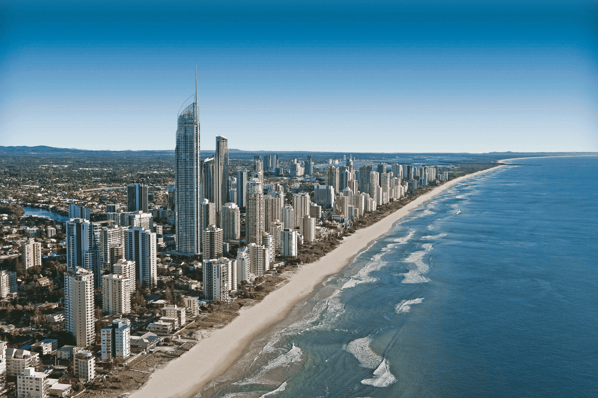
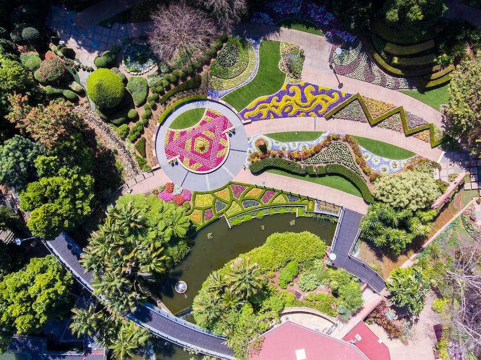
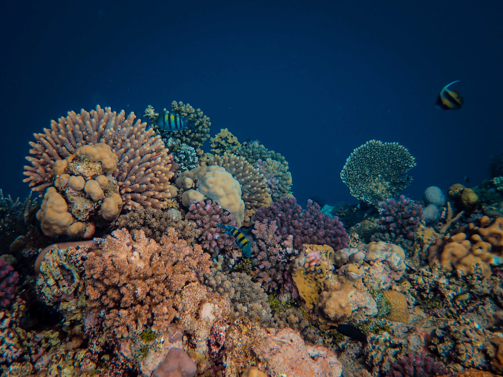
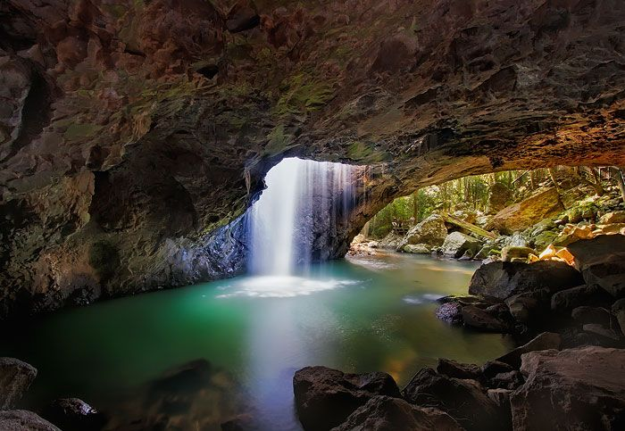

The Island Sanctuary of Australia
Queensland
The Gold Coast
The Gold Coast, located in Queensland, Australia, is a popular
coastal city that attracts visitors with its breathtaking beaches,
lively nightlife, and diverse entertainment choices. From the famous
Surfers Paradise Beach to exciting theme parks like Dreamworld and
Sea World, there are activities to suit all tastes. Nature enthusiasts
can explore the lush Hinterland, which features rainforests and waterfalls,
while shopping enthusiasts can enjoy various retail precincts. Whether
it's enjoying beach activities, water sports, or immersing in the vibrant
nightlife, the Gold Coast promises an unforgettable holiday with opportunities
for adventure, relaxation, and cherished moments.

Roma Street Parkland
Roma Street Parkland, located in Brisbane, Australia, is a magnificent
urban sanctuary spanning 16 hectares with a rich variety of green
spaces and gardens. The park's serene ambiance and range of
recreational amenities make it an ideal spot for relaxation and
outdoor pursuits. Visitors can explore the themed gardens, relish
the tranquil lake, and relish picnics with loved ones. The playground
is a source of delight for children, while photography enthusiasts
can capture captivating cityscape views. With a calendar of
year-round events and festivals adding vibrancy, Roma Street Parkland
offers a peaceful escape to reconnect with nature and create cherished
memories.

Great Barrier Reef
The Great Barrier Reef, situated off the coast of Queensland in
Australia, is a renowned natural marvel. Encompassing a vast coral
reef system that stretches more than 2,300 kilometers, it exhibits
exceptional marine diversity and captivating coral formations.
Snorkelers and scuba divers can fully immerse themselves in the
vibrant underwater world, encountering a kaleidoscope of marine
life like tropical fish, dolphins, and turtles. Boat tours and
helicopter/seaplane excursions provide unique ways to appreciate
the reef's beauty. Exploring the charming islands and pristine
beaches within the area is also an option.

Springbrook National Park
Springbrook National Park, located in Queensland, Australia,
is a protected and magnificent natural gem, renowned for its
captivating waterfalls, ancient rainforests, and diverse array of
wildlife. Notable attractions include the breathtaking Purling Brook
Falls and the magical Natural Bridge, which illuminates with
bioluminescent fungi after dark. Visitors can delight in exploring a
well-developed network of hiking trails, observe vibrant birdlife and
unique animals, and indulge in serene picnics amidst the peaceful
surroundings. Guided nocturnal tours and educational programs add
depth to the experience. For nature enthusiasts and those seeking a
tranquil escape in Queensland's captivating landscapes, Springbrook
National Park is an idyllic destination.
